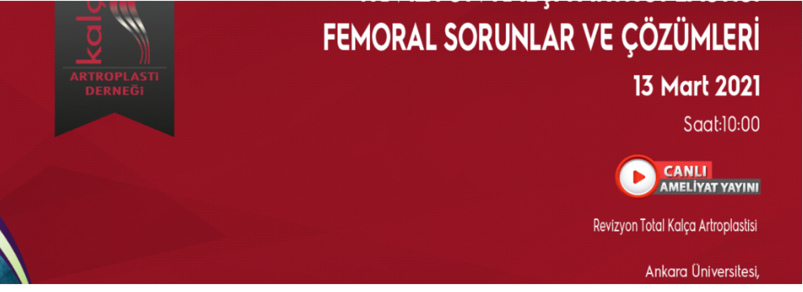

Kaydı izlemek için tıklayınız.

Sevgili meslektaşlarım,
KADAD sürekli tıp eğitimlerine online olarak devam ediyoruz. Bu kez Revizyon Kalça Artroplastisinde Femoral Sorunlar ve Çözümlerine odaklanacağız. 13 Mart cumartesi sabahı kısa bir teorik değerlendirme sonrası Ankara Üniversitesinden yapacağımız canlı ameliyat yayınında değerli eğitimcilerimizle konuyu tartışmak, çözüm seçeneklerini ve uygulamayı birebir görmek şansımız olacak. Sizlerin katılımıyla daha da verimli olacaktır.
Kadad Yönetim Kurulu
Dr. Bülent Atilla
Revizyon Kalça Artroplastisi / Femoral Sorunlar ve Çözümleri
10.00 - 10.10 Giriş
10.10 - 10.25 TKA Kemik Defektleri Sınıflandırma Osman Tecimel
10.25 - 10.40 TKA Periprostetik Kırıklar Ömür Çağlar
10.40 - 11.00 Revizyonda Femoral Komponent Çıkarılma Teknikleri Bülent Erdemli
11.00 - 11.15 Revizyonda Femoral Komponent Seçimi ve Fiksasyon Bülent Atilla
11.15 - 13.15 Canlı Cerrahi Kerem Başarır
13.15 - 13.30 İnteraktif Tartışma
